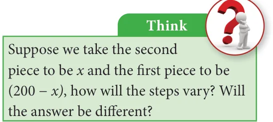

<!DOCTYPE html>
<html lang="en">
<head>
<meta charset="UTF-8">
<meta name="viewport" content="width=device-width,initial-scale=1">
<title>3.8.5 Word problems that involve linear equations — Algebra</title>
<meta name="description" content="Class 8 Mathematics · Algebra · 3.8.5 Word problems that involve linear equations">
<link rel="icon" href="data:image/svg+xml,<svg xmlns='http://www.w3.org/2000/svg' viewBox='0 0 100 100'><text y='.9em' font-size='90'>📘</text></svg>">
<link rel="stylesheet" href="../../../assets/book.css">
<link rel="stylesheet" href="https://cdn.jsdelivr.net/npm/katex@0.16.11/dist/katex.min.css" crossorigin="anonymous">
</head>
<body>
<header class="topbar">
<div class="topbar-in">
  <div class="crumb">
    <span class="c1"><a href="../../../index.html">Library</a> · <a href="../../index.html">Class 8 Mathematics</a></span>
    <span class="c2">Algebra · 3.8.5 Word problems that involve linear equations</span>
  </div>
  <a class="tb-btn" data-nav="prev" href="../../03-algebra/15-exercise-3.6/index.html" title="Exercise 3.6">←</a>
  <details class="drawer"><summary class="tb-btn" title="Sections in this chapter">☰</summary>
<div class="drawer-panel"><div class="dh">Algebra</div><a href="../01-chapter-opener/index.html">Chapter opener</a><a href="../02-introduction-3.1/index.html">3.1 Introduction</a><a href="../03-multiplication-of-algebraic-expressions-3.2/index.html">3.2 Multiplication of Algebraic Expressions</a><a href="../04-exercise-3.1/index.html">Exercise 3.1</a><a href="../05-division-of-algebraic-expressions-3.3/index.html">3.3 Division of Algebraic Expressions</a><a href="../06-avoid-some-common-errors-3.4/index.html">3.4 Avoid Some Common Errors</a><a href="../07-exercise-3.2/index.html">Exercise 3.2</a><a href="../08-identities-3.5/index.html">3.5 Identities</a><a href="../09-cubic-identities-3.6/index.html">3.6 Cubic Identities</a><a href="../10-exercise-3.3/index.html">Exercise 3.3</a><a href="../11-factorisation-3.7/index.html">3.7 Factorisation</a><a href="../12-exercise-3.4/index.html">Exercise 3.4</a><a href="../13-exercise-3.5/index.html">Exercise 3.5</a><a href="../14-linear-equation-in-one-variable-3.8/index.html">3.8 Linear Equation in One Variable</a><a href="../15-exercise-3.6/index.html">Exercise 3.6</a><a href="../16-word-problems-that-involve-linear-equations-3.8.5/index.html" aria-current="page">3.8.5 Word problems that involve linear equations</a><a href="../17-exercise-3.7/index.html">Exercise 3.7</a><a href="../18-graph-3.9/index.html">3.9 Graph</a><a href="../19-exercise-3.8/index.html">Exercise 3.8</a><a href="../20-to-obtain-a-straight-line-3.9.7/index.html">3.9.7 To obtain a straight line</a><a href="../21-linear-graph-3.10/index.html">3.10 Linear Graph</a><a href="../22-exercise-3.9/index.html">Exercise 3.9</a><a href="../23-exercise-3.10/index.html">Exercise 3.10</a><a href="../24-summary/index.html">SUMMARY</a></div></details>
  <a class="tb-btn" data-nav="next" href="../../03-algebra/17-exercise-3.7/index.html" title="Exercise 3.7">→</a>
  <button class="tb-btn" data-theme-toggle title="Toggle light / dark" aria-label="Toggle light or dark theme">◐</button>
</div>
<div class="progress"><span style="width:38.9%"></span></div>
</header>
<main class="wrap">
<div class="sec-head">
  <p class="eyebrow"><a href="../index.html">Chapter 3 · Algebra</a></p>
  <h1>3.8.5 Word problems that involve linear equations</h1>
  <p class="sec-meta">Textbook pages 30–33 · 3 figures</p>
</div>
<article class="prose">
<p>The challenging part of solving word problems is translating the statements into equations. Collect as many such problems and attempt to solve them.</p>
<h4 class="callout-h" id="s-example-3-33">Example 3.33</h4>
<p>The sum of two numbers is 36 and one number exceeds another by 8. Find the numbers.</p>
<h4 class="callout-h" id="s-solution">Solution:</h4>
<p>Let the smaller number be x and the greater number be x+8 Given: the sum of two numbers \(= 36\)</p>
<div class="mathblock"><p>\(x + (x+8) = 36 2 x +8 = 36 2 x = 36 - 8\) Hence,</p></div>
<p>\(2 x = 28\) (i) The smaller number, \(x =14 x = \frac{28}{2} = 14\) (ii) The greater number, \(x +8=14+8 = 22\)</p>
<h4 class="callout-h" id="s-example-3-34">Example 3.34</h4>
<p>A bus is carrying 56 passengers with some people having `8 tickets and the remaining having `10 tickets. If the total money received from these passengers is `500, find the number of passengers with each type of tickets.</p>
<h4 class="callout-h" id="s-solution">Solution:</h4>
<p>Let the number of passengers having `8 tickets be y. Then, the number of passengers with `10 tickets is \((56 -\) y). Total money received from the passengers = `500</p>
<div class="mathblock"><p>That is, \(y \times 8 + (56 -\) y) \(\times 10 = 500 8y +560 - 10y = 500 8y - 10y = 500 - 560 - 2y = - 60\)</p></div>
<p>\(y = \frac{60}{2}\) Hence, the number of passengers having,(i) `8 tickets =30</p>
<div class="mathblock"><p>\(y = 30\) (ii) `10 tickets \(=56 - 30 =26\)</p></div>
<h4 class="callout-h" id="s-example-3-35">Example 3.35</h4>
<p>The length of a rectangular field exceeds its breadth by 9 metres. If the perimeter of the field is 154m, find the length and breadth of the field.</p>
<h4 class="callout-h" id="s-solution">Solution:</h4>
<p>Let the breadth of the field be ‘x’ metres; then its length (x+9) metres. Perimeter of the \(P =\) 2(length + breadth) \(= 2(x + 9 + x)= 2(2x + 9)\) Given that, \(2(2x + 9) = 154\).</p>
<div class="mathblock"><p>\(4x + 18 = 154 4x = 154 - 18\) Hence,</p></div>
<p>\(4x = 136\) (i) Thus, breadth of the rectangular field \(= 34m x = 34\) (ii) length of the rectangular field \(= x+9 = 34+9 = 43m\)</p>
<h4 class="callout-h" id="s-example-3-36">Example 3.36</h4>
<p>There is a wooden piece of length 2m. A carpenter wants to cut it into two pieces such that the first piece is 40 cm smaller than twice the other piece. What is the length of the smaller piece ?</p>
<h4 class="callout-h" id="s-solution">Solution:</h4>
<p>Let us assume that the length of the first piece is x cm. Then the length of the second piece is \((200cm - x\) cm) i.e., \((200 -\) x) cm. According to the given statement (change m to cm), First piece \(= 40\) less than twice the second piece.</p>
<figure class="fig"></figure>
<div class="mathblock"><p>\(x = 2 \times (200 -\) x) \(- 40 x = 400 - 2x - 40\)</p><p>\(x + 2x = 360\)</p><p>\(3x = 360\) Hence,</p></div>
<p>\(x =\) (i) Thus the length of the first piece is 120 cm \(\frac{360}{3}\) (ii) The length of second piece is \(200cm - 120cm = 80cm\), \(x = 120\) which happens to be the smaller.</p>
<h4 class="callout-h" id="s-example-3-37">Example 3.37</h4>
<p>Mother is five times as old as her daughter. After 2 years, the mother will be four times as old as her daughter. What are their present ages?</p>
<h4 class="callout-h" id="s-solution">Solution:</h4>
<figure class="fig table-fig wide"></figure>
<p>Given condition: After two years, Mother’s age \(= 4\) times of Daughter's age</p>
<div class="mathblock"><p>\(5 x + 2 = 4\) ( \(x + 2) 5 x + 2 = 4 x + 8 5 x - 4x = 8 - 2 x = 6\)</p></div>
<p>Hence daughter’s present age \(= 6\) years; and mother’s present age \(= 5 x = 5 \times 6 = 30\) years</p>
<h4 class="callout-h" id="s-example-3-38">Example 3.38</h4>
<p>The denominator of a fraction is 3 more than its numerator. If 2 is added to the numerator and 9 is added to the denominator, the fraction becomes \(\frac{5}{6}\) . Find the original fraction.</p>
<h4 class="callout-h" id="s-solution">Solution:</h4>
<p>Let the original fraction be \(\frac{x}{y}\) .</p>
<p>Given that \(y = x + 3\). (Denominator = Numerator \(+ 3)\). Therefore, the fraction can be written as . As per the given condition, \(= 5\)</p>
<div class="mathblock"><p>\(\frac{x}{x + 3}\) ( \(\frac{x+2}{x+3+9}\) ) 6</p></div>
<p>By cross multiplication, \(6( x +2) = 5\) ( x +3+9)</p>
<div class="mathblock"><p>\(6 x +12 = 5( x +12) 6 x +12 = 5 x +60 6 x - 5 x = 60 - 12 x = 60 - 12 x = 48\).</p></div>
<p>Therefore, the original fraction is \(\frac{x}{x + 3} = \frac{48}{48+3} = \frac{48}{51}\) .</p>
<h4 class="callout-h" id="s-example-3-39">Example 3.39</h4>
<p>The sum of the digits of a two-digit number is 8. If 18 is added to the value of the number, its digits get reversed. Find the number.</p>
<h4 class="callout-h" id="s-solution">Solution:</h4>
<p>Let the two digit number be xy (i.e., ten’s digit is x, ones digit is y) Its value can be expressed as 10x+y. Given, \(x+y = 8\) which gives \(y = 8 - x\) Therefore its value is 10x+y</p>
<div class="mathblock"><p>\(= 10x + 8 - x = 9x + 8\).</p></div>
<p>The new number is yx with value is \(10y + x\)</p>
<div class="mathblock"><p>\(= 10(8 -\) x) \(+ x = 80 - 9x\)</p></div>
<p>Given, when 18 is added to the given number (xy) gives new number (yx)</p>
<div class="mathblock"><p>\((9x + 8) + 18 = 80 - 9x\)</p></div>
<p>This simplifies to \(9x + 9x = 80 - 8 - 18\)</p>
<div class="mathblock"><p>\(18x = 54 x = 3 \Rightarrow y = 8 - 3 = 5\)</p></div>
<p>The two digit number is xy \(= 10x+y \Rightarrow 10(3)+5 = 30+5 = 35\)</p>
<h4 class="callout-h" id="s-example-3-40">Example 3.40</h4>
<p>From home, Rajan rides on his motorbike at 35 km/hr and reaches his office 5 minutes late. If he had ridden at 50 km/hr, he would have reached his office 4 minutes earlier. How far is his office from his home?</p>
<h4 class="callout-h" id="s-solution">Solution:</h4>
<figure class="fig side-fig"></figure>
<p>Let the distance be ‘x’ km. (Recall that, time \(= \frac{Distance}{Speed}\) )</p>
<p>Time taken to cover ‘x’ km at 35 km/hr: \(T_{1} =\) hr</p>
<div class="mathblock"><p>\(\frac{x}{35}\)</p></div>
<p>Time taken to cover ‘x’ km at 50 km/hr: \(T_{2} = \frac{x}{50}\) hr</p>
<p>According to the problem, the difference between two timings</p>
<div class="mathblock"><p>\(= 4 -\) ( \(- 5) = 4+5 =9\) minutes</p></div>
<p>\(= \frac{9}{60}\) hour (changing minutes to hour)</p>
<div class="mathblock"><p>Given, \(T_{1} - T_{2}= \frac{9}{60}\)</p><p>\(\frac{xx}{3550} - = \frac{9}{60} \frac{10x - 7x}{350} = \frac{9}{60} \frac{3x}{350} = \frac{9}{60} x = \frac{9350}{603} \times\)</p></div>
<p>The distance to his office \(x =17 \frac{1}{2}\) km.</p>
</article>
<nav class="pager"><a class="" data-nav="prev" href="../../03-algebra/15-exercise-3.6/index.html"><span class="dir">← Previous</span><span class="t">Exercise 3.6</span><span class="ch">Algebra</span></a><a class="nx" data-nav="next" href="../../03-algebra/17-exercise-3.7/index.html"><span class="dir">Next →</span><span class="t">Exercise 3.7</span><span class="ch">Algebra</span></a></nav>
</main><footer class="site">Generated from the source textbook PDFs · text, figures and exercises belong to their respective publishers.</footer><script defer src="https://cdn.jsdelivr.net/npm/katex@0.16.11/dist/katex.min.js" crossorigin="anonymous"></script>
<script defer src="https://cdn.jsdelivr.net/npm/katex@0.16.11/dist/contrib/auto-render.min.js" crossorigin="anonymous"
  onload="renderMathInElement(document.body,{delimiters:[
    {left:'\\(',right:'\\)',display:false},
    {left:'$$',right:'$$',display:true},
    {left:'\\[',right:'\\]',display:true}],throwOnError:false,ignoredTags:['script','noscript','style','textarea','pre','code']})"></script>
<script src="../../../assets/book.js"></script>
<script defer src="../../../../assets/search.js?v=1789782769"></script>
<script defer src="../../../../assets/screenshot.js?v=1789782769"></script>
</body>
</html>
